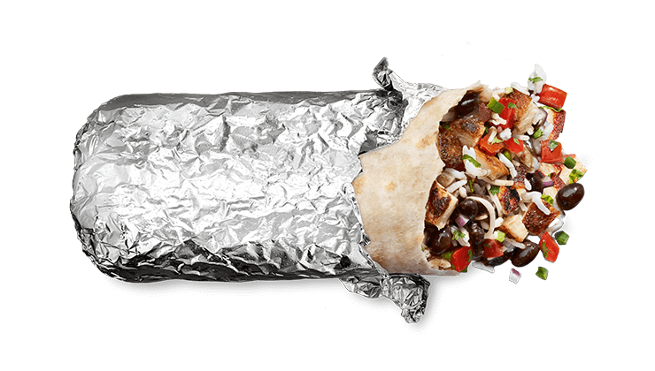

Restaurant 1: Chipotle Mexican Grill

This restaurant is located about 1/2 a mile away from petty building, and is known for its burrito bowls. It is open Daily from 10:45AM to 11:00PM, satifying your late dinner cravings.
1. Chipotle Burrito
2. Chipotle Burrito Bowl

3. Chipotle Quesadilla